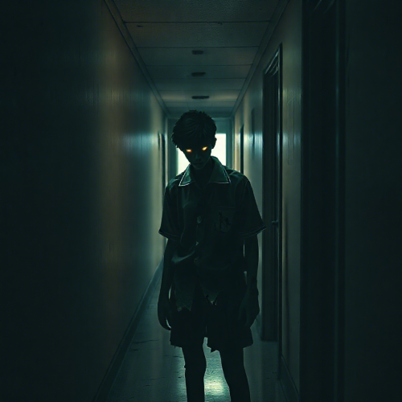

The Lost Student

THE LOST STUDENT
"Don't do suicide kids, that shit kills you."
The Lost Student is a entity created by CuriosJude. It is a vengeful spirit of
a old student, who unfortunately take his own life because of...
DESCRIPTION:
It is a fictional character created by known as CuriosJude. The Lost Student is a vengeful spirit
haunting the University of Cebu Main Campus in Cebu City in the Philippines, driven by anger and
sadness. this entity seeks revenge against teachers who neglect their duties, targeting those
who fail to support struggling students.
APPERANCE:
It appears as a fifteen year old boy, forever trapped in his teenage years. His form is mostly
shadowed, with only his glowing eyes visible. He wears a torn and stained school uniform,
symbolizing his shattered dreams. An eerie cold and sadness follow him, along with flickering
lights and sudden drafts.
ORIGINS:
The Lost Student was once a high school student at the University of Cebu Main Campus, who
took his own life after a teacher failed him deliberately, preventing his graduation. His
restless spirit now roams the school halls, seeking to avenge the neglect and mistreatment
she experienced by targeting teachers who fail their students.